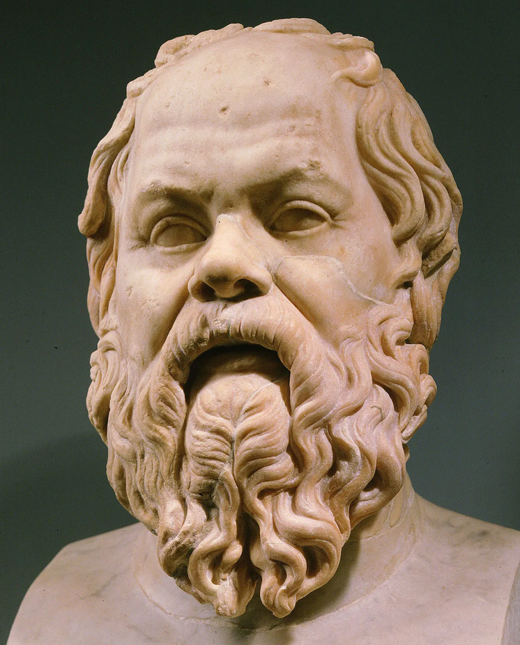
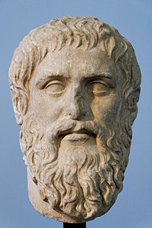
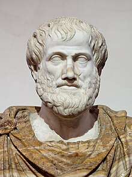

Per quanto riguarda la filosofia antica, possiamo distinguere tra presocratici, filosofi classici e filosofi ellenistici.
Presocratici (600 a.C. – 400 a.C.). Tra questi gli appartenenti alla corrente della Filosofia naturale ionica come Talete di Mileto, Anassimandro e Anassimene, ma anche alla Scuola eleatica, come Parmenide di Elea o Eraclito di Efeso, Pitagora e i pitagorici, gli atomisti come Leucippo e i sofisti come Antifone;
Grecia Classica (450 a.C. – 322 a.C.). Rappresentata dai tre grandi filosofi greci ateniesi Socrate, Platone e Aristotele;
Ellenismo e tarda antichità (300 a.C. – 300 d.C.). Compresi l’Accademia e il Peripato (il Liceo Aristotelico), gli epicurei, gli stoici e gli scettici.

Socrate è stato il primo delle tre più grandi figure della filosofia ateniese.
Leggendario anche ai suoi tempi, era ammirato dai suoi seguaci per la sua integrità, la sua padronanza di sé, la sua profonda intuizione filosofica e la sua grande capacità argomentativa.
Fu il primo filosofo greco ad esplorare seriamente le questioni etiche.
La sua influenza sul successivo corso della filosofia antica fu così grande che i filosofi che lo precedettero sono convenzionalmente indicati come i "presocratici".
Davanti al sofismo, particolarmente diffuso nel V secolo a.C., Socrate formula il suo pensiero antirelativista: Socrate professava di non insegnare nulla e di non sapere nulla, ma solo di cercare risposte a domande umane urgenti e di aiutare gli altri a fare lo stesso.
Il suo stile di filosofare consisteva nell'impegnarsi in conversazioni pubbliche su alcune eccellenze umane e, attraverso abili domande, mostrare che i suoi interlocutori non sapevano di cosa stessero parlando.
Nonostante i risultati negativi di questi incontri, Socrate aveva alcune ampie opinioni positive, tra cui quella secondo cui la virtù è una forma di conoscenza e che la "cura dell'anima" è l'obbligo umano più importante.

Platone era un filosofo, allievo di Socrate e in seguito insegnante di Aristotele.
Ha fondato l'Accademia, un programma accademico. Platone ha scritto molti testi filosofici: ha dedicato la sua vita all'apprendimento e all'insegnamento ed è considerato uno dei fondatori della filosofia occidentale.
L'opera più famosa di Platone è la Repubblica, che descrive in dettaglio una società perfettamente organizzata e gestita da filosofi.
È anche famoso per i suoi dialoghi che mostrano la sua teoria metafisica delle forme, un'altra cosa per cui è ben noto.
Platone fondò anche l'Accademia, un programma accademico che molti considerano la prima università occidentale, dove sottolineò l'importanza della scienza e della matematica.
Platone è uno dei filosofi più influenti della storia: suoi contributi spaziano in numerosi sottocampi filosofici, tra cui (ma non solo) l'etica, la cosmologia e la metafisica.
Sebbene non fosse uno scienziato nel senso moderno del termine, Platone esaminò anche il mondo naturale e le implicazioni filosofiche che conteneva.

Aristotele è stato uno dei più grandi filosofi mai vissuti ed è considerato da alcuni il primo vero scienziato della storia.
Ha dato contributi pionieristici in tutti i campi della filosofia e della scienza, ha inventato il campo della logica formale e ha identificato le varie discipline scientifiche ed esplorato le loro relazioni reciproche.
Aristotele fu anche un insegnante e fondò la sua scuola ad Atene, conosciuta come il Liceo.
Il pensiero di Aristotele era originale, profondo, ampio e sistematico. Alla fine divenne la struttura intellettuale della Scolastica occidentale, il sistema di presupposti filosofici e problemi caratteristici della filosofia nell'Europa occidentale durante il Medioevo.
Nel XIII secolo San Tommaso d'Aquino si impegnò a riconciliare la filosofia e la scienza aristotelica con il dogma cristiano, e attraverso di lui la teologia e la visione intellettuale del mondo della Chiesa Cattolica Romana divennero aristoteliche.
Dalla metà del XX secolo, l'etica di Aristotele ha ispirato il campo della teoria della virtù, un approccio all'etica che enfatizza il benessere umano e lo sviluppo del carattere.
Il pensiero di Aristotele costituisce una corrente importante anche in altri campi della filosofia contemporanea, in particolare la metafisica, la filosofia politica e la filosofia della scienza.